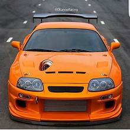
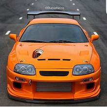
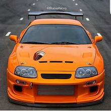

The A80 program began in February 1989 under various teams for design, product planning
, and engineering led by Isao Tsuzuki.
By the middle of 1990,
a final A80 design concept from Toyota Technical Centre Aichi was
approved and frozen for production in late 1990.
The first test mules were hand-built in A70 bodies during late 1990,
followed by the first A80 prototypes being hand-assembled in 1991.
Again using subframe, suspension, and drivetrain assemblies from the Z30 Soarer (Lexus SC300/400),
pre-production of the test models started in December 1992 with 20 units made,
[32] and official mass production began in April 1993.[32][inconsistent]
The fourth-generation Supra again shared its platform with the upscale Soarer coupe,
sold in the U.S. as the Lexus SC. Although the two cars looked similar dimension-wise,
the new Supra was more than 13 inches (340 mm) shorter than its luxurious cousin.[33]
This redesign saw Toyota placing great emphasis on a more serious high-performance car.
The A80 featured two new engines:
a naturally aspirated Toyota 2JZ-GE having a power output of 164 kW (220 hp; 223 PS)
at 5,800 rpm and 210 lb⋅ft (285 N⋅m)
at 4,800 rpm of torque and a twin turbocharged Toyota 2JZ-GTE having a power output of 206 kW
(276 hp; 280 PS) and 318 lb⋅ft (431 N⋅m) of torque for the Japanese model.
For the export model (American/European markets) Toyota upgraded the Supra turbo's engine
(by installing smaller, steel wheeled turbochargers and bigger fuel injectors, etc.).
This increased the power output to 239 kW (321 hp; 325 PS) at 5,600 rpm and 315 lb⋅ft
(427 N⋅m)
of torque at 4,000 rpm (243 kW (326 hp; 330 PS) and 325 lb⋅ft (441 N⋅m) for European markets)
Upon its launch in 1993,
it was the first Toyota-badged vehicle to include a passenger-side airbag as standard
(US-market only).[32]
The twin turbochargers operated in sequential mode instead of parallel.
Initially, all of the exhaust gases are routed to the first turbine for reduced lag.
This resulted in boost and enhanced torque as early as 1,800 rpm,
where it already produced 300 lb⋅ft (407 N⋅m) of torque. At 3,500 rpm,
some of the exhaust gases are routed to the second turbine for a "pre-boost" mode,
although none of the compressor output is used by the engine at this point. At 4,000 rpm,
the second turbo's output is used to augment the first turbo's output.
Compared to the parallel mode,
sequential mode turbochargers provide quicker low RPM response and increased high RPM boost.
This high RPM boost was also aided with technology originally present in
the 7M-GE in the form of the Acoustic Control Induction System
(ACIS) which is a way of managing the air compression pulses within
the intake piping as to increase power.
For this generation, the Supra received a new six-speed Getrag/Toyota
V160 gearbox on the turbo models while the naturally aspirated models were
equipped with a five-speed manual W58 transmission,
revised from the previous model. Each model was offered with a
four-speed automatic with manual shifting mode.
All vehicles were equipped with five-spoke aluminium alloy wheels,
the naturally aspirated models had 16-inch wheels and the turbo models had
17-inch wheels wearing 235/45/17 fronts and 255/40/17 rear tyres.
The difference in wheel size was to accommodate the
larger brakes equipped as standard on the turbo model,
but in Japan were optional equipment.
The turbo models had 4 piston front calipers with 2 piston rear calipers.
The NA made do with dual front and single rear piston calipers.
Both models had a space saver spare tyre on a steel rim to save both space and weight.
All models used a double wishbone suspension front and rear.
Rear view (pre-facelift)
European specification with bonnet scoop[30] and OEM active front lip (pre-facelift)
European specification taillights
Interior (pre-facelift)
Toyota took measures to reduce the weight of this new model. Aluminium was used for the bonnet,
targa top (when fitted), front crossmember, oil and transmission pans,
and forged upper suspension A-arms. Other measures included hollow carpet fibres,
magnesium-alloy steering wheel, plastic gas tank and lid, dished out head bolts,
gas injected rear spoiler, and a single pipe exhaust.
Despite having more features such as dual airbags, traction control, larger brakes,
wheels, tyres, and an additional turbocharger,
the car was at least 91 kg (200 lb) lighter than its predecessor.
The base model with a manual transmission had a curb weight of 1,456 kg (3,210 lb).
The targa top added 18 kg (40 lb) of weight while the automatic transmission added 25 kg
(55 lb)
. The fourth-generation model had a 51:49 (front:rear)
weight distribution. The turbo model weighed 1,565 kg (3,450 lb)
with a manual transmission while the automatic added another 4.5 kg (10 lb)
to the overall weight. Weight distribution was 53% front and 47% rear.
The Supra was heavier than the Mazda RX-7 and all aluminium bodied Acura/Honda
NSX and weighed about the same amount as the Nissan 300ZX,
but was lighter than the Mitsubishi 3000GT VR-4.[34]
By the late 1990s, sales of all sport coupes were declining in North America.
Furthermore, a stronger yen pushed prices up in markets outside Japan.
[35] The Supra was withdrawn from the Canadian market in 1996 and the US in 1998.
The Turbo was not available in 1998 in California Air Resources Board (CARB) states.
Production continued in Japan until August 2002,
ceasing owing to restrictive emission standards.
At the March 2002 Geneva Motor Show,
a Japanese coach builder company called Ohno Car Craft displayed their 1960s
style grand tourer based on the Supra,
known as the Naomi III.[36][37] Two variants were available,
the naturally aspirated 3000GT-SZ with the same 165 kW (225 PS; 222 hp)
as the naturally aspirated Japanese market Supra SZ and a tuned
turbocharged 3000GT-RZ with 309 kW
(420 PS; 414 hp).[29]
Performance
The turbocharged variant could accelerate 0–97 km/h (0–60 mph)
in as low as 4.6 seconds and cover 402 m (1⁄4 mile) in 13.1
seconds at 175 km/h (109 mph).[38]
Car and Driver magazine includes a rollout in their 4.6 seconds
test (typically about 0.3 second) that they subtract from the acceleration figures.[39]
The turbo version has a tested top speed of 257 km/h (160 mph),[40]
but the cars are restricted to just 180 km/h (112 mph) in Japan and 250 km/h
(155 mph) in worldwide markets.
European versions of the car also had an air intake or scoop on the bonnet.
It has a drag coefficient of Cd=0.31 for the naturally aspirated models and 0.32
for the turbo models but unknown with the rear spoiler.
The standard A80 Supra chassis has also proven an effective platform for roadracing,
with several top 20 and top 10 One Lap of America finishes in the SSGT1 class. In 1994,
the A80 managed remarkable skidpad ratings of 0.95 lateral g's (200 ft) and 0.98
lateral g's (300 ft)[41] The Supra also featured a four-sensor four-channel
track tuned ABS system with yaw control whereby each caliper is sensored and the brakes
are controlled individually according to the speed,
angle, and pitch of the approaching corner.
This unique Formula One-inspired braking system allowed the Supra Turbo to record a 113 km/h
(70 mph) -0 braking distance of 149 ft (45 m),[42]
the best braking performance of any production car tested in 1997 by Car and Driver magazine.
This record was finally broken in 2004 by a Porsche Carrera GT
which did it in 145 ft (44 m).
1994
